Design for Others
「リュックの紐の長さが左右で違う人」
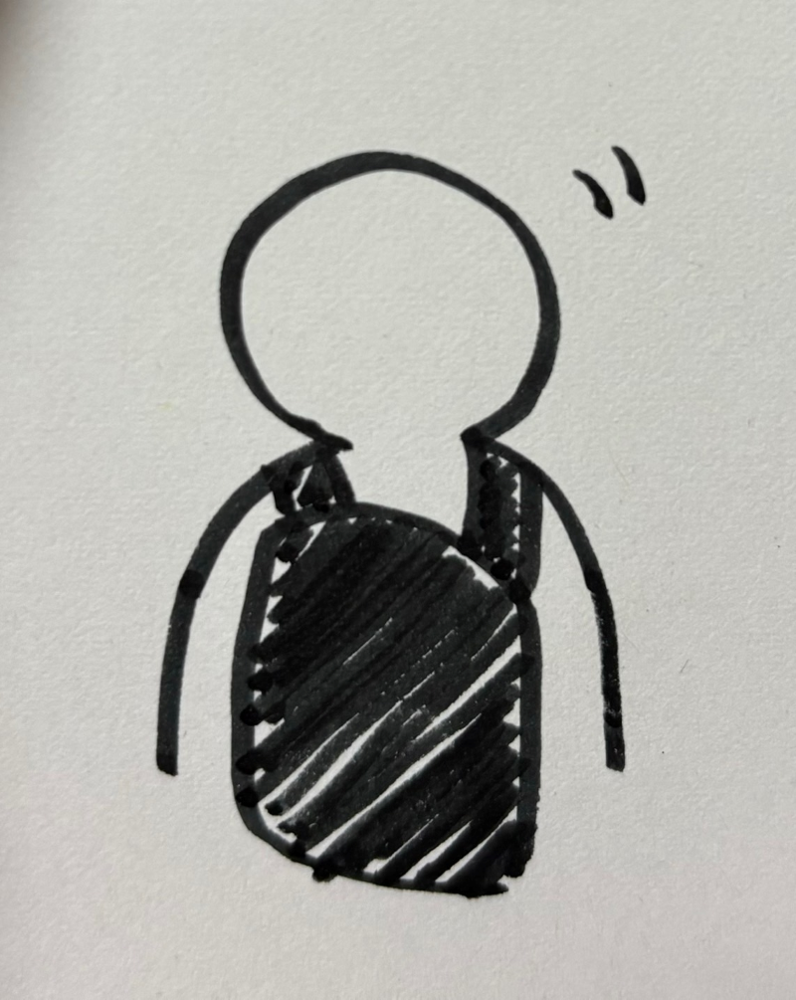 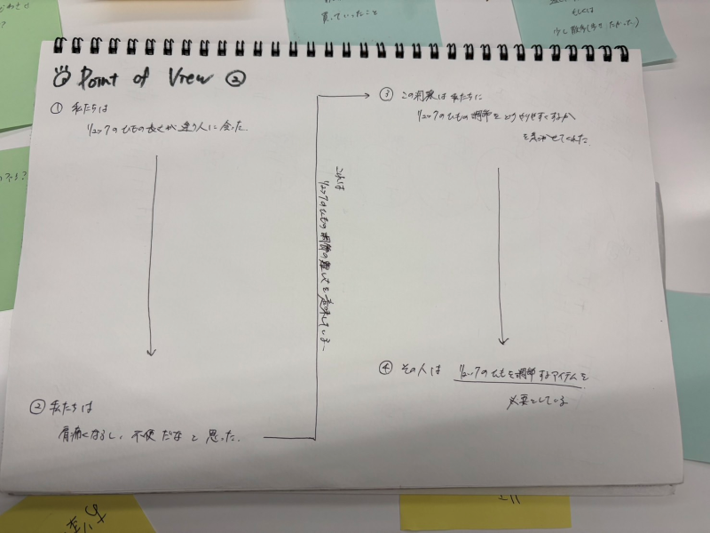
私たちの班では「リュックの紐の長さが左右で違う人」をテーマにした。
このテーマから私は、リュックの紐調節を簡単にできるものを作ろうと考えた。
完成品🌼↓
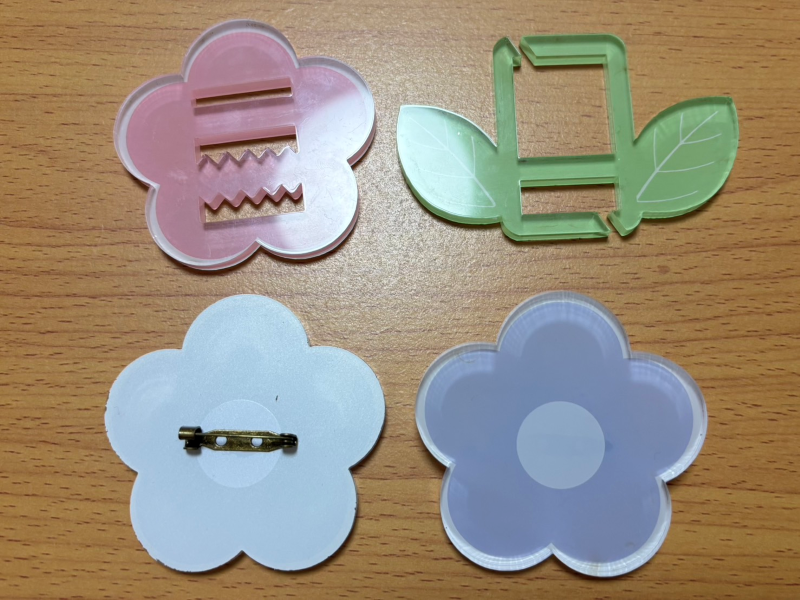
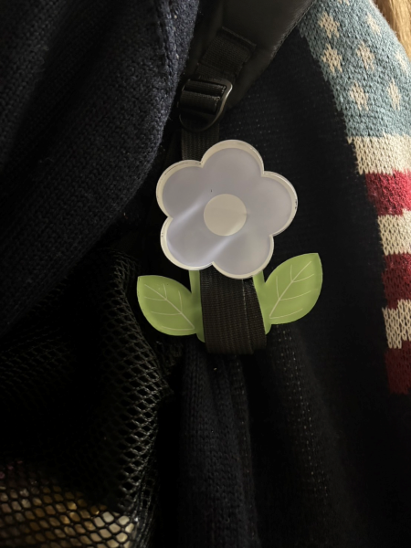 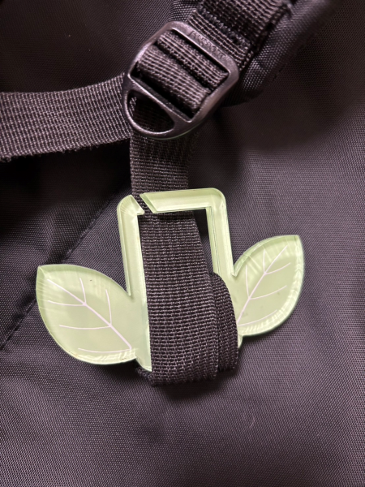
花：紐調節 葉っぱ：余った紐をまとめる。
リュックの余った紐の部分にピンを付けた花で固定し、葉っぱに余ったひもをくるくる巻き付ける。
ラダーロックはリュックから取り外せなかったため、ピンで固定するデザインも作った。
スケッチ↓
作品説明
リュックの紐を固定するラダーロックと紐をまとめるアイテムを作った。
今回はリュックの紐が左右で違う人をテーマに考えた。
紐の長さが左右で変わってしまう原因は、リュックの紐を調節するラダーロックが滑りやすく
リュックの重さで引っ張られてしまうことだと考え、紐を通す部分をギザギザにし摩擦を増やした。
また、紐を調節した際に余っている紐の部分がどこかに引っかかって意図せず紐の長さが変わってしまう、ということも
原因に挙げられたので、紐をくるくるまとめることができるアイテムも作った。
葉っぱの紐をまとめるアイテムには斜めの切れ込みを入れ、そこから紐を入れて紐を巻き付ける。
なぜ作ろうと思ったのか
高校生の時に使っていたリュックが、走るとすぐ紐が長くなってしまうものだったのでとても不便に感じており、
何回かリュックを変えていたので、しっかり紐を固定できるアイテムがあればより使いやすくなると考えた。
また、紐を固定するだけでは長さが勝手に変わってしまう可能性があると思ったので、余ったひもの部分も固定できれば
紐をしっかり固定できると考え、紐をまとめるアイテムも作った。
紐調節のラダーロックと、紐をまとめるアイテムを花と葉っぱのデザインにしてニコイチのように作った。
かわいいデザインでファッションアイテムとしても使えると考えた。
スケッチ↓
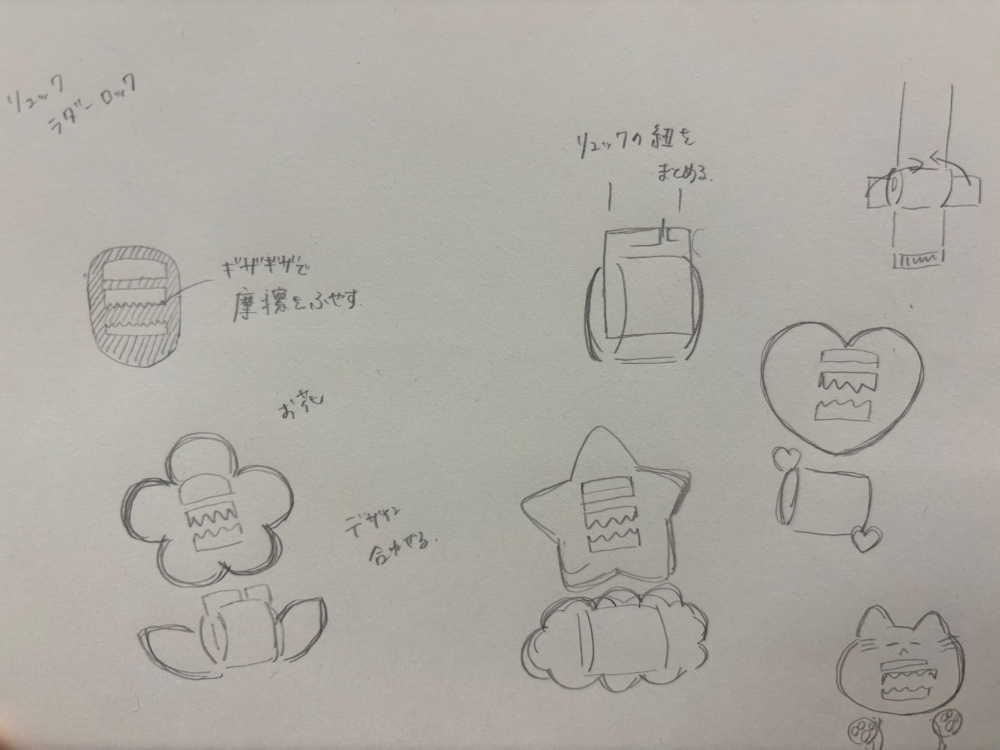
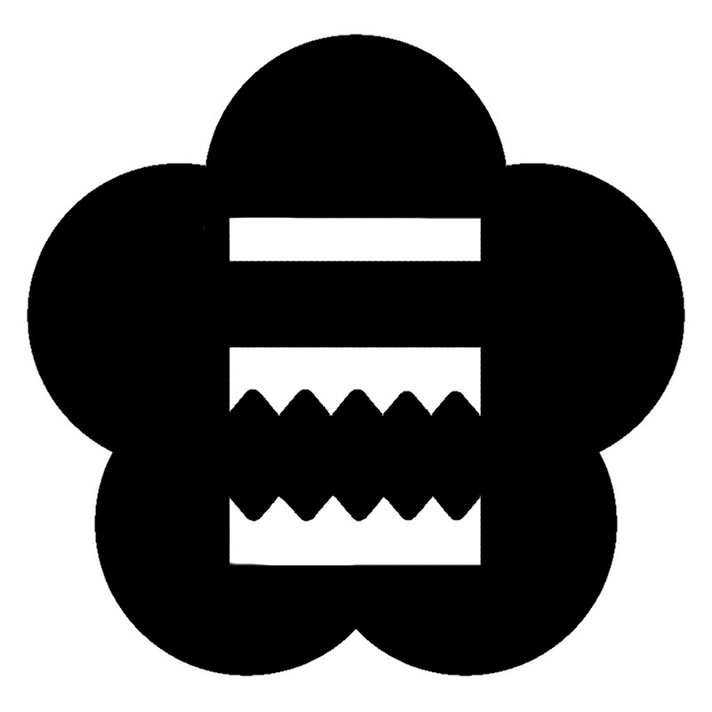 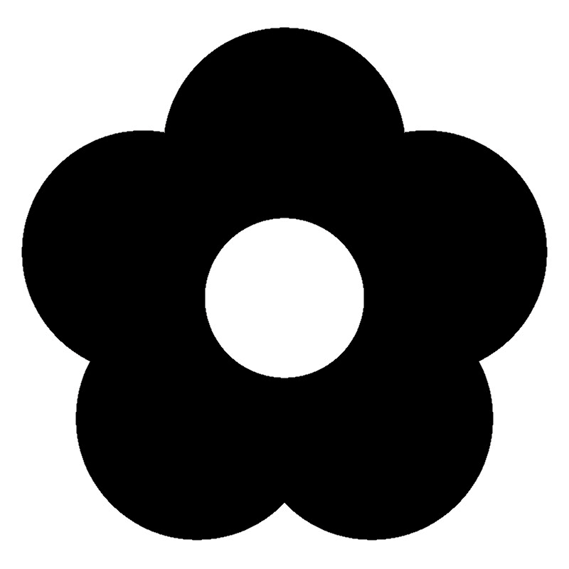 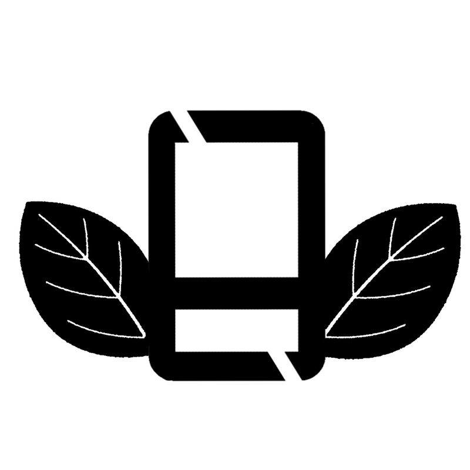
その画像をillustratorに読み込んで作成した。
illustratorファイル
UVプリンターファイル1
UVプリンターファイル2
UVプリンターファイル3
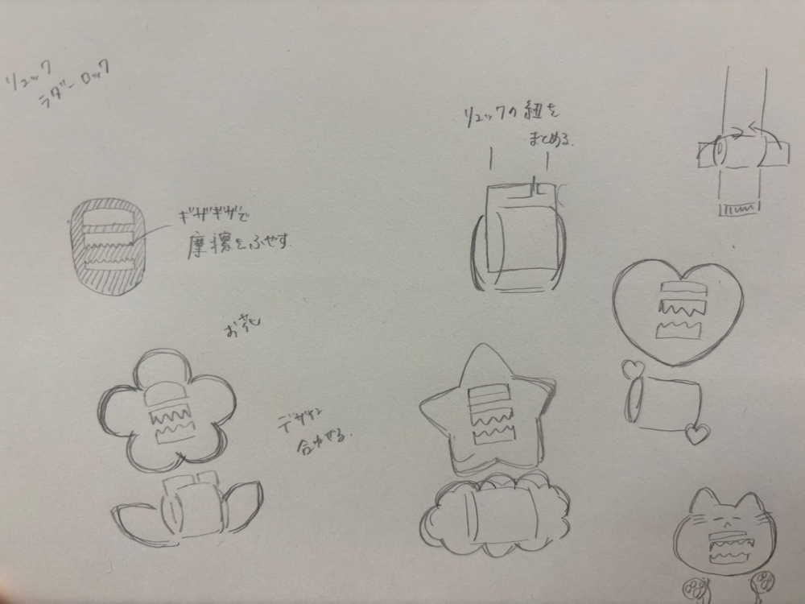
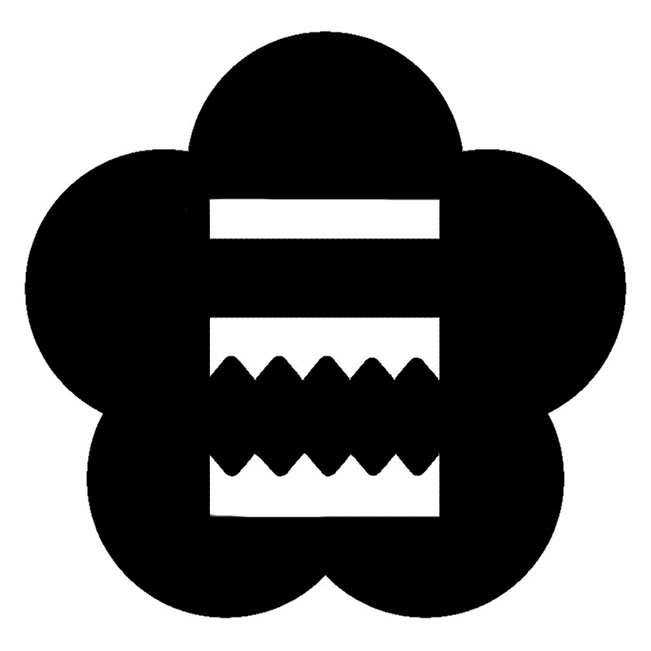 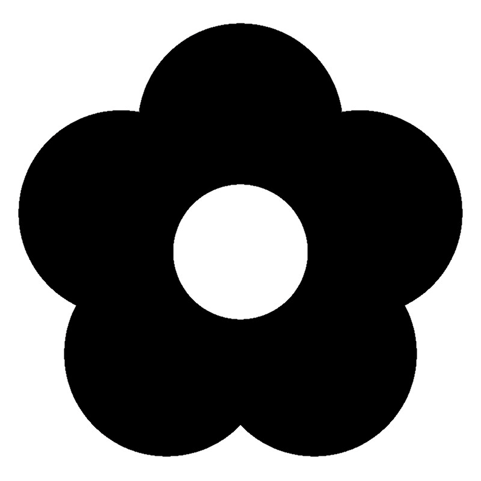 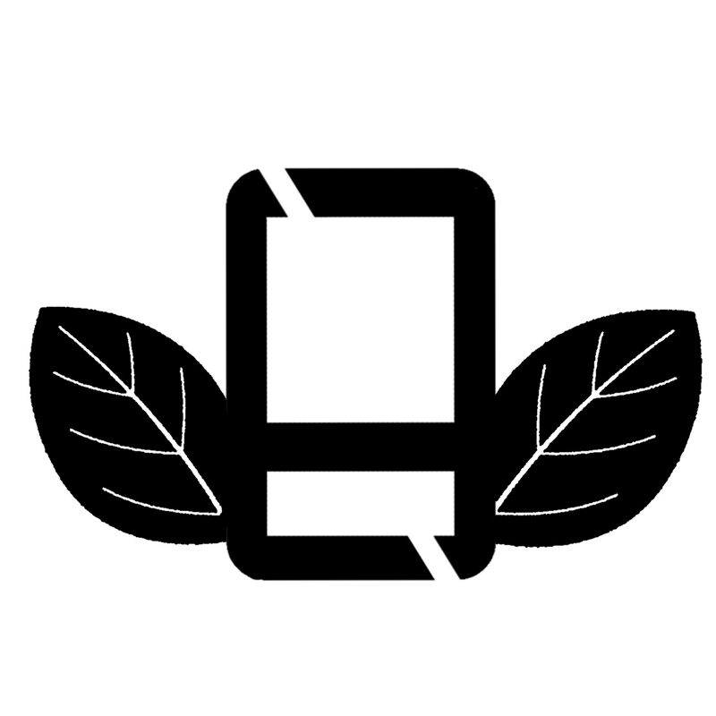
その画像をillustratorに読み込んで作成した。
illustratorファイル
UVプリンターファイル1
UVプリンターファイル2
UVプリンターファイル3